USC CTF Fall 2024 Writeups
Published on
colors (crypto)
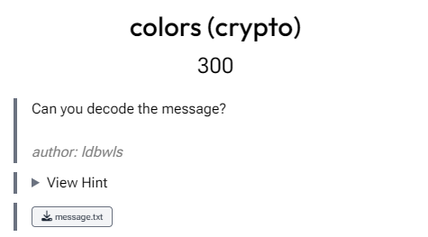
This was a rather simple challenge. The message is easily recognizable as base64. After that hex --> binary --> ASCII, which will give the flag.
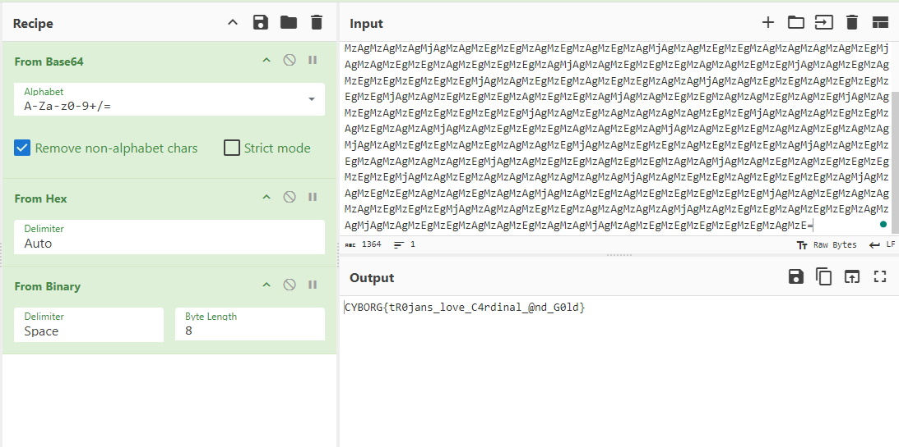
Flag: CYBORG{tR0jans_love_C4rdinal_@nd_G0ld}
iRobot (web)
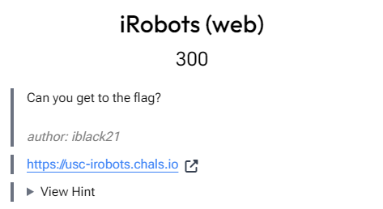
Another simple challenge. By the name one can guess that it hints at checking the robots.txt file. Heading over to that file gives this:
User-agent: *
Disallow: /hidden/flag.txt
Going over /hidden/flag.txt gives the flag.
Flag: CYBORG{robots_txt_is_fun}
weirdtraffic (forensics)
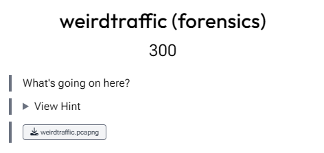
We've been given a .pcapng file. Opening it in Wiresharks shows some connection captures. First I tried to find parts of the flag through a string search, which in turn actually gave the flag.
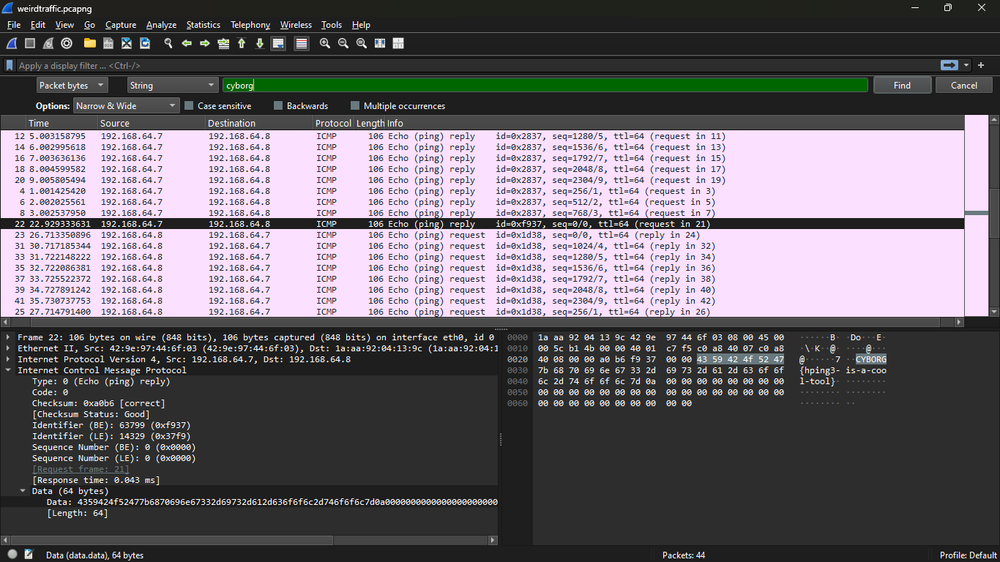
Flag: CYBORG{hping3-is-a-cool-tool}
pineapple (forensics)
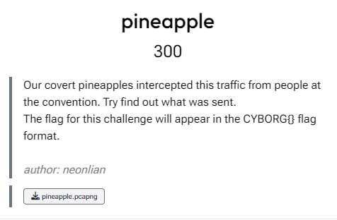
Another Wireshark challenge. Opening it in Wireshark shows a lot of connections. I mean a lot. I started by filtering out the http connections first and found few.
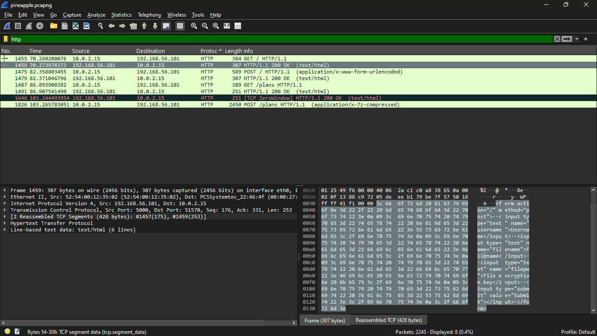
POST requests. One of those requests to / has a forms with usernmae, filename and filepw fields. There's also an .7z compressed file, which can be extracted. To extract the file right click on the stream then Follow > HTTP Stream. A pop-up will appear containing the data contents of the stream. Click on Save as and save the file on your computer. Make sure that the data as showed is raw (since it is binary file, saving it in a specific encoding may lead to data loss as not every encoding has every characters). Now the thing is that the file we just saved has some response text and also the raw bytes for the .7z file. To get rid of the response text, open the file in some text-editor such as vim or nano. Then manually remove the unwanted contents.
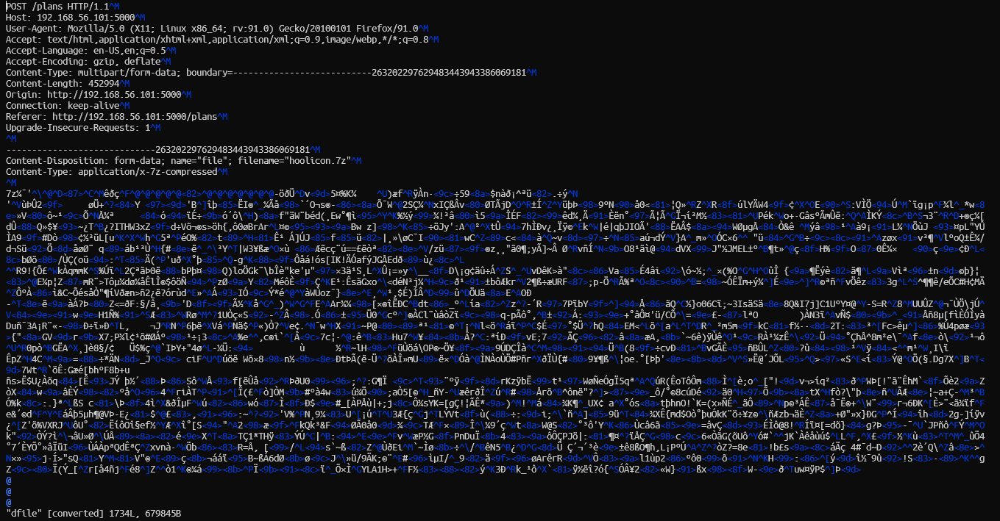
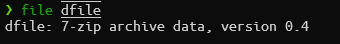
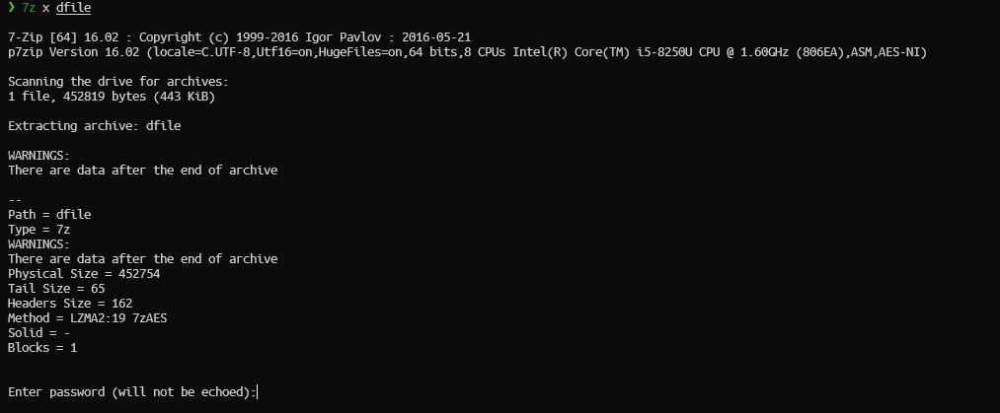
filepw field in a form found earlier. Checking one of the POST requests, we are able to see the form data submitted to the server.
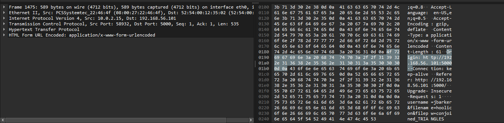
filepw as conjoined_TRIANGLES. Using this to extract the .7z file gives us a image file containing the file.
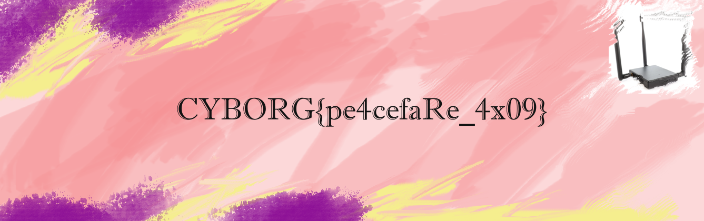
Flag: CYBORG{pe4cefaRe_4x09}
think_twice (forensics)
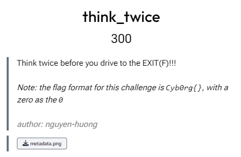
From description it is evident that we have to use exiftool. Using exitfool to extract the data gave a base64 string in the Software section of the metadata. Decoding it gave another base64 string, decoding further gave the flag.
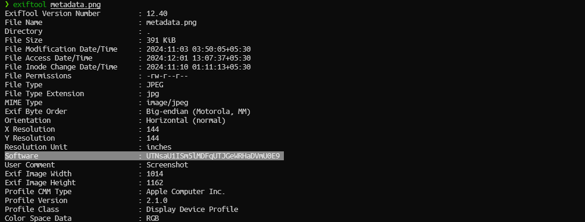
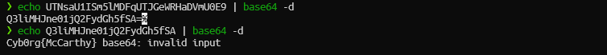
Flag: Cyb0rg{McCarthy}
decipherium (crypto) (Solved post-CTF)
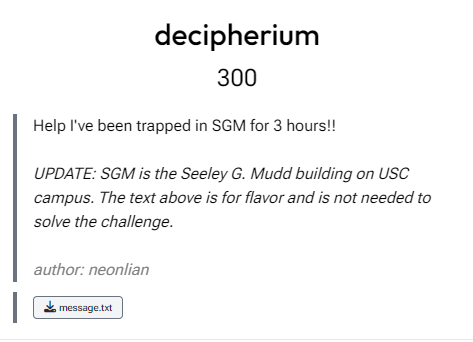
The give file contains the following text:
TeSbILaTeSnTeNoISnTeCsCsDyICdTeIISnTeLaSbCdTeTeTeLaTeSbINoTeSbSbInICdTeBaSbSbISnIYbSbCdTeXeINoSbSbTeHoTeITeFmTeITeMdITeSbICsEr52 51 53 57 52 50 52 102 53 50 52 55 55 66 53 48 52 53 53 50 52 57 51 48 52 52 52 57 52 51 53 102 52 51 51 49 53 48 52 56 51 51 53 50 53 70 51 48 52 54 53 102 51 51 52 67 52 53 52 100 52 53 52 101 53 52 51 53 55 68At first it seems to be a simple hex but I was so wrong at that moment. Decoding it into hex didn't work; neither converting the whole number to bytes did. It was not until the end of the CTF I realized that we needed to simply convert each no inot its ASCII representation and de-hex the result.
Here's the solve script:
elements = { "H": 1, "He": 2, "Li": 3, "Be": 4, "B": 5, "C": 6, "N": 7, "O": 8, "F": 9, "Ne": 10, "Na": 11, "Mg": 12, "Al": 13, "Si": 14, "P": 15, "S": 16, "Cl": 17, "Ar": 18, "K": 19, "Ca": 20, "Sc": 21, "Ti": 22, "V": 23, "Cr": 24, "Mn": 25, "Fe": 26, "Co": 27, "Ni": 28, "Cu": 29, "Zn": 30, "Ga": 31, "Ge": 32, "As": 33, "Se": 34, "Br": 35, "Kr": 36, "Rb": 37, "Sr": 38, "Y": 39, "Zr": 40, "Nb": 41, "Mo": 42, "Tc": 43, "Ru": 44, "Rh": 45, "Pd": 46, "Ag": 47, "Cd": 48, "In": 49, "Sn": 50, "Sb": 51, "Te": 52, "I": 53, "Xe": 54, "Cs": 55, "Ba": 56, "La": 57, "Ce": 58, "Pr": 59, "Nd": 60, "Pm": 61, "Sm": 62, "Eu": 63, "Gd": 64, "Tb": 65, "Dy": 66, "Ho": 67, "Er": 68, "Tm": 69, "Yb": 70, "Lu": 71, "Hf": 72, "Ta": 73, "W": 74, "Re": 75, "Os": 76, "Ir": 77, "Pt": 78, "Au": 79, "Hg": 80, "Tl": 81, "Pb": 82, "Bi": 83, "Po": 84, "At": 85, "Rn": 86, "Fr": 87, "Ra": 88, "Ac": 89, "Th": 90, "Pa": 91, "U": 92, "Np": 93, "Pu": 94, "Am": 95, "Cm": 96, "Bk": 97, "Cf": 98, "Es": 99, "Fm": 100, "Md": 101, "No": 102, "Lr": 103, "Rf": 104, "Db": 105, "Sg": 106, "Bh": 107, "Hs": 108, "Mt": 109, "Ds": 110, "Rg": 111, "Cn": 112, "Nh": 113, "Fl": 114, "Mc": 115, "Lv": 116, "Ts": 117, "Og": 118 }
ctext = "TeSbILaTeSnTeNoISnTeCsCsDyICdTeIISnTeLaSbCdTeTeTeLaTeSbINoTeSbSbInICdTeBaSbSbISnIYbSbCdTeXeINoSbSbTeHoTeITeFmTeITeMdITeSbICsEr"
elements_list = []
i = 0
while i < len(ctext):
if 65 <= ord(ctext[i]) <= 90:
if i + 1 < len(ctext) and 97 <= ord(ctext[i + 1]) <= 122:
elements_list.append(ctext[i:i + 2])
i += 2
else:
elements_list.append(ctext[i])
i += 1
numbers = [elements[i] for i in elements_list]
hex_string = "".join([chr(i) for i in numbers])
print(b''.fromhex(hex_string).decode("utf-8"))
Flag: CYBORG{PERI0DIC_C1PH3R_0F_3LEMENT5}
unpopcorn (crypto)
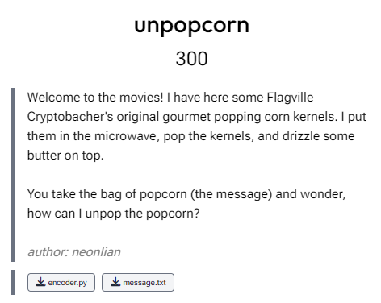
We are given a python script which encrypts the flag of the challenge.
m = 57983
p = int(open("p.txt").read().strip())
def pop(s):
return map(lambda x: ord(x)^42, s)
def butter(s):
return map(lambda x: x*p%m, s)
def churn(s):
l = list(map(lambda x: (x << 3), s))
return " ".join(map(lambda x: "{:x}".format(x).upper(), l[16:] + l[:16]))
flag = open("flag.txt").read().strip()
message = open("message.txt", "w")
message.write(churn(butter(pop(flag))))
message.close()
pop() and churn() functions can be easily reversed; the problem lies with the butter() function since we do not know the value of $p$. Mathematically if $y$ is the result of the operation in butter(), then:$$ \begin{align*} x \cdot p &\equiv y &\mod m \\ x &\equiv y \cdot p^{-1} &\mod m \end{align*} $$ To find $p^{-1}$ we need to find $p$ which, unfortunately we don't have. But what we do have is that we know the flag format and hence, given that m is a small number, we can bruteforce values of $p^{-1}$ and for each flag retrieved we can see if it fits the format correctly or not. Below is the solve script for this:
global m
m = 57983
ctext = [
0x3FB60, 0x4F510, 0x42930, 0x31058, 0xDEA8, 0x4A818, 0xDEA8, 0x1AA88,
0x65AE0, 0x1C590, 0x17898, 0x1C590, 0x29170, 0x3FB60, 0x55D10, 0x29170,
0x42930, 0x6A7D8, 0x4C320, 0x4F510, 0x5FC0, 0x193A0, 0x4F510, 0x2E288,
0x29170, 0x643F8, 0x31058, 0x6A7D8, 0x4A818, 0x1AA88, 0x1AA88
]
def reverse_churn(s):
dr = s[-16:] + s[:-16]
return list(map(lambda x: (x >> 3), dr))
def reverse_butter(s, p_inv):
return list(map(lambda x: x * p_inv % m, s))
def reverse_pop(s):
try:
return "".join(map(lambda x: chr(x ^ 42), s))
except ValueError:
return ""
rev_churned = reverse_churn(ctext)
for p_inv in range(1, m):
try:
rev_buttered = reverse_butter(rev_churned, p_inv)
flag = reverse_pop(rev_buttered)
if "CYBORG{" in flag:
print(flag)
except:
continue
Flag: CYBORG{R1Ch_BUTT3RY_SUSTENANC3}
D'Lo (crypto)
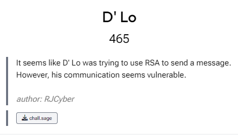
I might first add that this was the challenge I enjoyed most out of all crypto challeneges. The chall.sage contains the following:
from Crypto.Util.number import *
FLAG = b"REDACTED"
p = getPrime(256)
q = getPrime(256)
e = 7
n = p*q
d = int(pow(e, -1, (p-1)*(q-1)))
c = pow(bytes_to_long(FLAG), e, n)
print(f"n = {n}")
print(f"c = {c}")
print(f"d_low = {hex(d)[70:]}")
"""
n = 9537465719795794225039144316914692273057528543708841063782449957642336689023241057406145879616743252508032700675419312420008008674130918587435719504215151
c = 4845609252254934006909399633004175203346101095936020726816640779203362698009821013527198357879072429290619840028341235069145901864359947818105838016519415
d_low = b9b24053029f5f424adc9278c750b42b0b2a134b0a52f13676e94c01ef77
"""Recall that $e$, $d$ and $N$ are related by the relation: $$ \begin{align*} e \cdot d &\equiv 1 \mod{\phi(N)} \\ \end{align*} $$ where $\phi(m) = (p-1)(q-1) = N-(p+q-1)$ is called the Euler's Totient Function.
So, $$ \begin{align*} e \cdot d = k \phi(N) + 1 \\ e \cdot d - k \phi(N) = 1 \\ \end{align*} $$ for some positive integer $k$.
Now $d \leq \phi(N)$ since $d = modInv(e,\phi(N))$. This implies that $1 \leq k \leq e$. Hence we will have to check for only $e$ values of $k$. Also we've been given some least significant bits of $d$ (let it be $b$). Therefore $d$ can be written as, $$ d=d_{0} + 2^{b} \cdot d_{1} $$ where $d_{0} = d \mod{2^{b}}$ is the known bits of $d$ and $d_{1}$ represents the unknown bits. Putting this value in the initial equation we get, $$ \begin{align*} e \cdot (d_{0} + 2^{b} \cdot d_{1}) - k \phi(N) = 1 \\ e \cdot d_{0} + e \cdot 2^{b} \cdot d_{1} - k \phi(N) = 1 \\ e \cdot d_{0} + e \cdot 2^{b} \cdot d_{1} - k \cdot (N-(p+q-1)) = 1 \\ \end{align*} $$ Put $X=p+q$, $$ \begin{align*} e \cdot d_{0} + e \cdot 2^{b} \cdot d_{1} - k \cdot (N-(X-1)) = 1 \\ k \cdot X = k \cdot N + k - e \cdot d_{0} + 1 + e \cdot 2^{b} \cdot d_{1} \\ \end{align*} $$ Further to remove the $d_{1}$ term, we solve the above equation modulo $2^{b}$ as $e \cdot 2^{b} \cdot d_{1} \equiv 0 \mod 2^{b}$. $$ \begin{align*} k \cdot X \equiv k \cdot N + k - e \cdot d_{0} + 1 \mod{2^{b}} \\ e \cdot d_{0} \cdot X - k\cdot X \cdot (N-X+1) + k \cdot N \equiv X \mod{2^{b}} \\ \end{align*} $$ Thus $p$ and $q$ be factorized easily and then the problem reduces to textbook RSA problem.
d = int("0xb9b24053029f5f424adc9278c750b42b0b2a134b0a52f13676e94c01ef77",16)
e = 7
N = 9537465719795794225039144316914692273057528543708841063782449957642336689023241057406145879616743252508032700675419312420008008674130918587435719504215151
known_bits = 240
X = var('X')
d0 = d % (2 ** known_bits)
P. = PolynomialRing(Zmod(N))
for k in range(1, e+1):
try:
results = solve_mod([e * d0 * X - k * X * (N - X + 1) + k * N == X], 2 ** 240)
for m in results:
f = x * 2 ** known_bits + ZZ(m[0])
f = f.monic()
roots = f.small_roots(X = 2 ** (N.nbits() / 2 - known_bits), beta=0.3)
if roots:
x0 = roots[0]
p = gcd(2 ** known_bits * x0 + ZZ(m[0]), N)
q = N / ZZ(p)
print('p =', ZZ(p))
print('q =', N / ZZ(p))
assert ZZ(p)*(N/ZZ(p)) == N
break
except:
pass
# p = 100571592176913563473553598439895415391332870938827636562155584701290520956889
# q = 94832601466810038823671344791144082145009301280785700275762290283318790228359
from Crypto.Util.number import long_to_bytes
e = 7
c = 4845609252254934006909399633004175203346101095936020726816640779203362698009821013527198357879072429290619840028341235069145901864359947818105838016519415
n = 9537465719795794225039144316914692273057528543708841063782449957642336689023241057406145879616743252508032700675419312420008008674130918587435719504215151
p = 100571592176913563473553598439895415391332870938827636562155584701290520956889
q = 94832601466810038823671344791144082145009301280785700275762290283318790228359
phi = (p-1)*(q-1)
z = pow(e, -1, phi)
m = pow(c, z, n)
print(long_to_bytes(m))
#CYBORG{H0w_w3ll_d0_y0u_th1nk_d'lo_w1ll_d0_7h15_53ason??}
Flag: CYBORG{H0w_w3ll_d0_y0u_th1nk_d'lo_w1ll_d0_7h15_53ason??}
beer sales (osint)
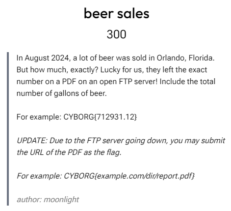
Just search something like "Beer sale orlando august 2024"
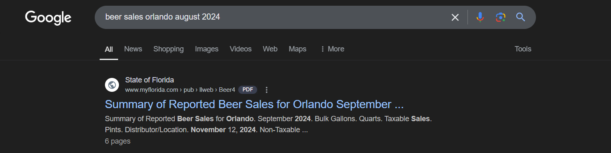
Flag: CYBORG{ftp://www.myflorida.com/pub/llweb/Beer4.pdf}
TommyCam (osint)
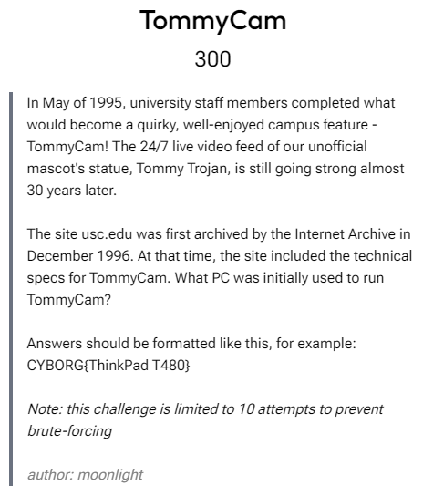
Wayback machine had a link to the first archive of the site. There is a link to view weather details via TommyCam. Clicking on that link has a link for another page which details the technical information of TommyCam.
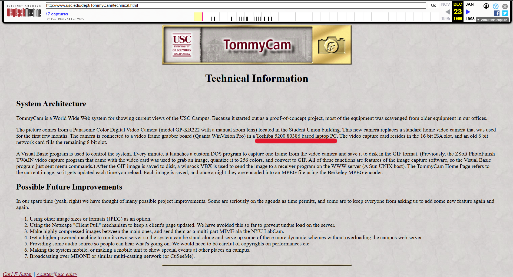
Flag: CYBORG{Toshiba 5200 80386}
television (osint)
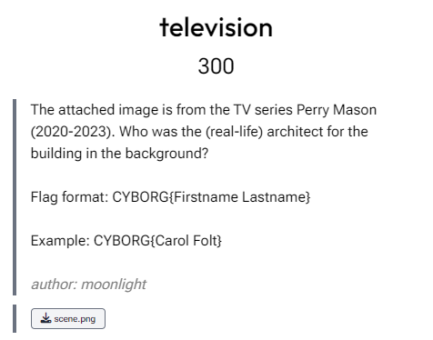
Reversing searching the image by Google reveals a similar image at this link. From there, searching for "the radiant assembly of god church name" showed this link. From there we can see the name of the building in a below section. Searching for the name lands us on a Wikipedia page where the name of the architect is mentioned.
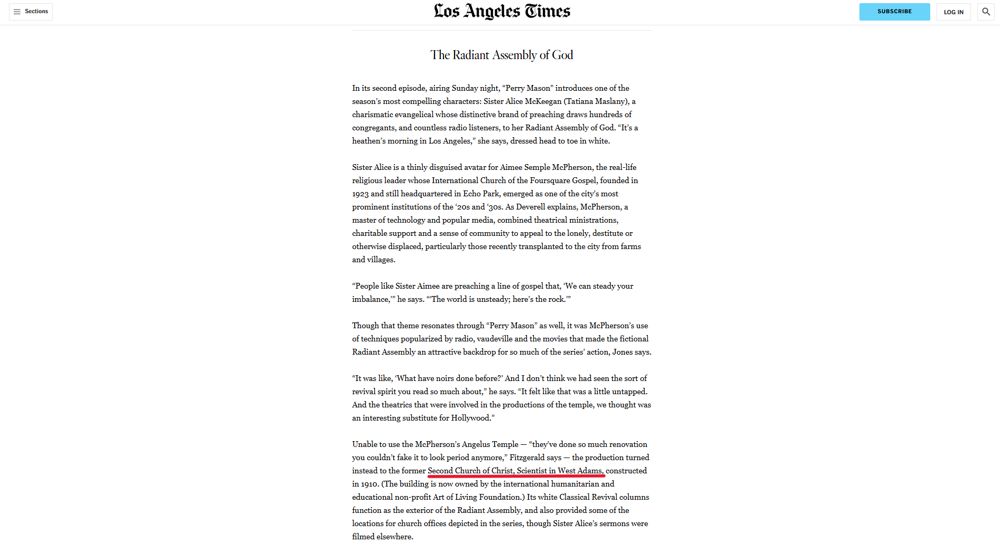
Flag: CYBORG{Alfred Rosenheim}
Tommy's Artventures (osint)
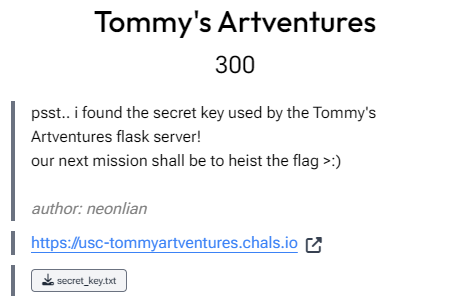
First let's see what Tommy's upto. Seems like he just likes AI generated art.
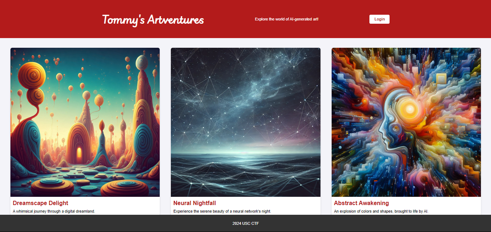
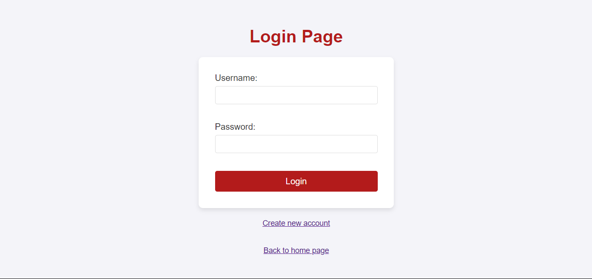
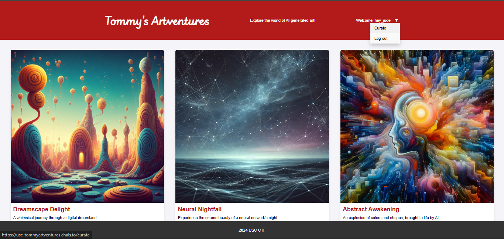
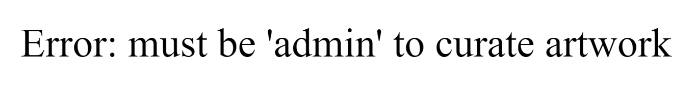
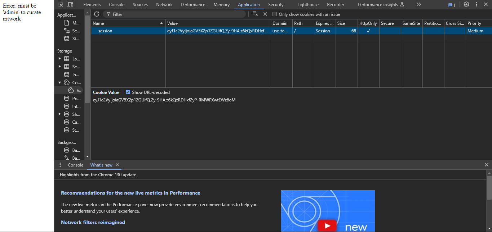
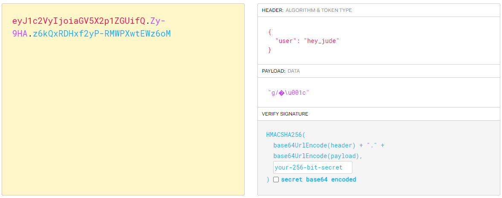
> flask-unsign --sign --secret "4a6282bf78c344a089a2dc5d2ca93ae6" --cookie "{'user': 'admin'}"/curate button and get the flag.
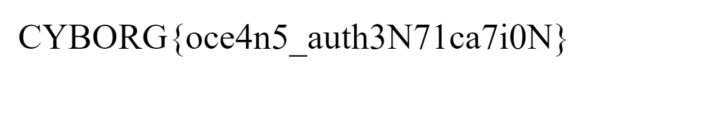
Flag: CYBORG{oce4n5_auth3N71ca7i0N}